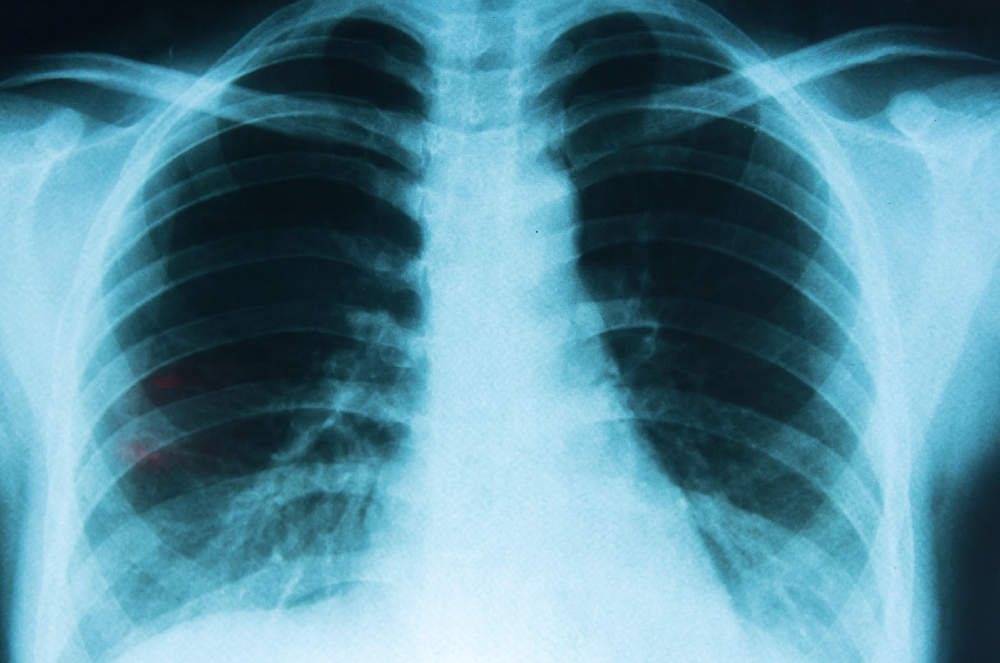
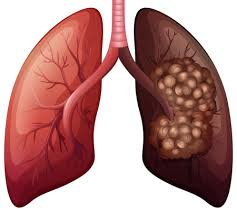
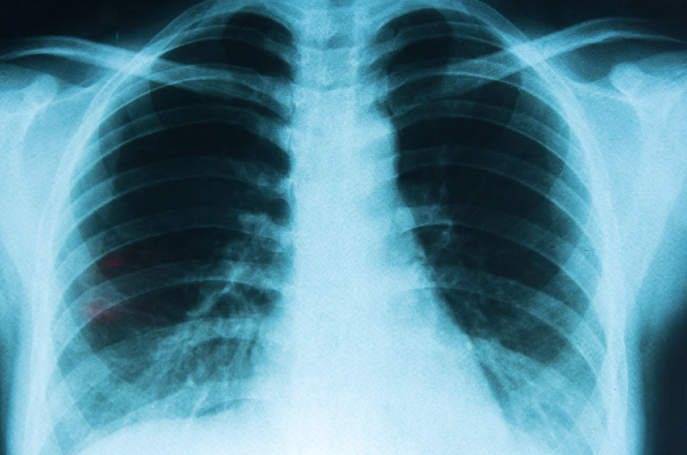
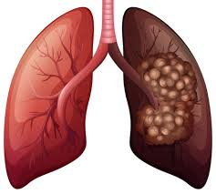

Cáncer Pulmonar
El cáncer que comienza en los pulmones. Los pulmones se localizan en el tórax. Cuando usted respira, el aire pasa a través de la nariz, baja por la tráquea y llega hasta los pulmones, donde fluye a través de conductos llamados bronquios. La mayoría de los cánceres pulmonares comienzan en las células que recubren estos conductos.
Tipos de Cáncer Pulmonar
- Cáncer pulmonar de células no pequeñas (CPCNP) - el tipo más común.
- Cáncer pulmonar de células pequeñas (CPCP) - conforma aproximadamente el 20% de todos los casos.
Si el cáncer comenzó en otro lugar del cuerpo y se diseminó a los pulmones, se denomina cáncer metastásico al pulmón.
Causas
El cáncer pulmonar es el tipo de cáncer más mortífero tanto para hombres como para mujeres. Cada año, mueren más personas de cáncer en el pulmón que de cáncer de mama, de colon y de próstata combinados.
El cáncer pulmonar es más común en adultos mayores. Es poco común en personas menores de 45 años. Fumar provoca la mayoría de los casos (cerca del 90%) de cáncer de pulmón.
El riesgo depende de la cantidad de cigarrillos que fume usted cada día y durante cuánto tiempo ha fumado. Estar alrededor del humo de otras personas (humo de segunda mano) también aumenta su riesgo. No existe evidencia de que fumar cigarrillos bajos en alquitrán disminuya el riesgo.
La investigación muestra que fumar marihuana puede ayudar a que las células cancerígenas crezcan. Pero no hay un vínculo directo entre fumar marihuana y desarrollar cáncer pulmonar.
La exposición constante a altos niveles de contaminación del aire y tomar agua con un alto nivel de arsénico puede aumentar el riesgo de cáncer pulmonar.
Tener antecedentes de radioterapia en los pulmones también puede aumentar este riesgo. Trabajar en o vivir cerca de químicos o materiales que provocan cáncer también puede aumentar el riesgo de desarrollar cáncer pulmonar.
Síntomas
Es posible que el cáncer pulmonar incipiente no cause ningún síntoma. Los síntomas dependen del tipo de cáncer que usted tenga, pero pueden abarcar:
- Dolor torácico
- Tos que no desaparece
- Tos con sangre
- Fatiga
- Pérdida de peso involuntaria
- Pérdida del apetito
- Dificultad para respirar
- Sibilancias
Otros síntomas que también se pueden presentar con el cáncer pulmonar, a menudo en sus estadios tardíos son:
- Dolor o sensibilidad en los huesos
- Párpado caído
- Parálisis facial
- Ronquera o cambio de la voz
- Dolor articular
- Problemas en las uñas
- Dolor en el hombro
- Dificultad para tragar
- Hinchazón de la cara o los brazos
- Debilidad
Estos síntomas también pueden deberse a otras afecciones menos graves, por lo que es importante consultar con su proveedor de atención médica.
Pruebas y Exámenes
El cáncer de pulmón con frecuencia se encuentra cuando se realiza una radiografía o una tomografía computarizada por otra razón.
Si se sospecha de cáncer de pulmón, su proveedor realizará un examen físico y hará preguntas acerca de la historia clínica.
Los exámenes que pueden realizarse para diagnosticar el cáncer de pulmón o para ver si se ha extendido incluyen:
- Gammagrafía ósea
- Radiografía de tórax
- Conteo sanguíneo completo (CSC)
- Panel metabólico completo
- Tomografía computarizada del tórax y del abdomen
- Resonancia magnética del tórax
- Tomografía por emisión de positrones (TEP)
- Examen de esputo para buscar células cancerosas
- Toracocentesis (muestra de acumulación de líquido alrededor del pulmón)
Tratamiento
El tratamiento para el cáncer de pulmón depende del tipo de cáncer, de lo avanzado que esté y de cuán saludable esté usted:
- La cirugía para extirpar el tumor se puede hacer cuando este no se haya propagado más allá de los ganglios linfáticos cercanos.
- La quimioterapia, la inmunoterapia, y la terapia dirigida utilizan medicamentos para destruir las células cancerosas y detener el crecimiento de las nuevas células.
- La radioterapia utiliza potentes rayos X u otras formas de radiación para destruir las células cancerosas.
Grupos de Apoyo
El estrés causado por la enfermedad se puede aliviar uniéndose a un grupo de apoyo para el cáncer. El hecho de compartir con otras personas que tengan experiencias y problemas en común puede ayudarle a no sentirse solo.
Expectativas (Pronóstico)
El pronóstico depende de cuánto se haya diseminado el cáncer y si las células de este tienen ciertos cambios genéticos que produzcan blancos moleculares dentro de o sobre las células.
Prevención
Si usted fuma, ahora es el momento de dejarlo. Si usted está teniendo problemas para dejar de fumar, hable con su proveedor. Existen muchos métodos para ayudarle a dejar el cigarrillo, desde grupos de apoyo hasta medicamentos recetados.
.jpeg)
.jpeg) 



.jpeg)